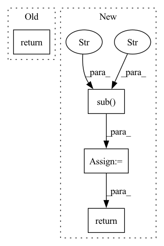

Pattern ID :26958
Before Change
phones = phones.replace("ˌ", "").replace("ː", "").replace("ˑ", "").replace("˘", "").replace("|", "").replace("‖", "")
if not self.use_word_boundaries:
phones = phones.replace(" ", "")
return phones + "//"
def english_text_expansion(text):After Change
if not self.use_word_boundaries:
phones = phones.replace(" ", "")
else:
phones = re.sub(r"\s+" , " " , phones)
if include_eos_symbol:
phones += "//"
return phones
def english_text_expansion(text):In pattern: SUPERPATTERN
Frequency: 4
Non-data size: 4
Instances Fragment ID: 80341805
Project Name: digitalphonetics/ims-toucan
Commit Name: d5ac9de46dc4d554e12742d8ed42df7870187c8a
Time: 2021-06-06
Author: florian.lux@ims.uni-stuttgart.de
File Name: PreprocessingForTTS/ProcessText.py
M Class Name: TextFrontend
N Class Name: TextFrontend
M Method Name: get_phone_string(3)
N Method Name: get_phone_string(2)
M Parent Class:
N Parent Class:
M File Name: PreprocessingForTTS/ProcessText.py
N File Name: PreprocessingForTTS/ProcessText.py
M Start Line: 136
M End Line: 141
N Start Line: 95
N End Line: 126
Before Change
// fix spaces in contractions
updated_sent = re.sub(r"([a-zA-Z0-9])\s+(\*?n"t)", r"\1\2", updated_sent)
return updated_sent
After Change
// fix spaces in contractions
updated_sent = re.sub(r"([a-zA-Z0-9])\s+(\*?n"t)", r"\1\2", updated_sent)
// remove ``
updated_sent = re.sub(r"\s*``\s*" , " " , updated_sent)
return updated_sent.strip()
Fragment ID: 80341807
Project Name: chanind/frame-semantic-transformer
Commit Name: 726126ddc977212a52963566de8fada7b48e188d
Time: 2022-05-09
Author: chanindav@gmail.com
File Name: frame_semantic_transformer/data/data_utils.py
M Class Name: AnonimousClass
N Class Name: AnonimousClass
M Method Name: standardize_punct(1)
N Method Name: standardize_punct(1)
M Parent Class:
N Parent Class:
M File Name: frame_semantic_transformer/data/data_utils.py
N File Name: frame_semantic_transformer/data/data_utils.py
M Start Line: 22
M End Line: 24
N Start Line: 22
N End Line: 26
Before Change
import re
r = re.sub(r"(.+)( \1)+", r"\1", text).replace(" _", "").replace("_ ", "")
if r == "_": r = ""
return r
After Change
def merge_repeated(self, text):
import re
text = re.sub(r"(.)\1+", r"\1", text)
text = re.sub(r" +" , r" " , text)
if text == " ": text = ""
return text
Fragment ID: 80341806
Project Name: kaiidams/voice100
Commit Name: 5948424c99deeb7b562afb7eee83aea08887d642
Time: 2021-06-08
Author: katsuya.iida@gmail.com
File Name: voice100/encoder.py
M Class Name: CharEncoder
N Class Name: CharEncoder
M Method Name: merge_repeated(2)
N Method Name: merge_repeated(2)
M Parent Class:
N Parent Class:
M File Name: voice100/encoder.py
N File Name: voice100/encoder.py
M Start Line: 67
M End Line: 69
N Start Line: 67
N End Line: 70
Before Change
t = "@user" if t.startswith("@") and len(t) > 1 else t
t = "http" if t.startswith("http") else t
new_text.append(t)
return " ".join(new_text)
class SentenceEmbedding:After Change
def preprocess(text):
text = re.sub(r"@[A-Z,0-9]+" , "@user" , text)
urls = URLEx.find_urls(text)
for _url in urls:
try:
text = text.replace(_url, "http")
except re.error:
logging.warning(f"re.error:\t - {text}\n\t - {_url}")
return text
class SentenceEmbedding: Fragment ID: 80341809
Project Name: cardiffnlp/tweetnlp
Commit Name: 212c96af4178f684070e64408e393b5d08079edb
Time: 2022-06-27
Author: asahi1992ushio@gmail.com
File Name: tweetnlp/model_sentence_embedding/model.py
M Class Name: AnonimousClass
N Class Name: AnonimousClass
M Method Name: preprocess(1)
N Method Name: preprocess(1)
M Parent Class:
N Parent Class:
M File Name: tweetnlp/model_sentence_embedding/model.py
N File Name: tweetnlp/model_sentence_embedding/model.py
M Start Line: 20
M End Line: 25
N Start Line: 24
N End Line: 31